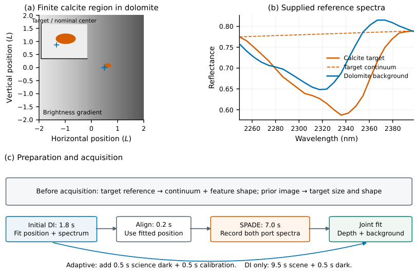

局部矿物吸收光谱的空间模式选择
摘要
吸收带深度衡量矿物反射率相对于其局部连续谱的分数下降。恢复小矿物区域的这一特征强度有助于区域间的定量比较，但衍射会将其光与环境光混合。传统光谱拟合可以分离平均贡献；它无法去除已经记录下来的背景光子噪声。我们建立一种受量子启发的测量框架，利用空间模式解复用（SPADE）在探测前保留目标吸收响应并降低背景接受。该框架将有限矿物区域几何和参考光谱与估计精度联系起来。一个依赖损耗的设计条件确定了在未知场景参数下、固定响应泊松测量中，增加SPADE曝光何时优于直接成像（DI）。由初始DI观测和两个模式端口进行的联合推理，在估计目标深度的同时估计未知且空间共享的背景光谱。在包含定位不确定性、装调时间、校准和探测器成本的等时仿真中，相对于具有相同背景自由度的全像素DI，这种采集在五种吸收强度下将深度均方根误差（RMSE）降低14%–26%。这些结果使用给定的目标特征形状和几何，其中目标连续谱斜率被拟合而曲率固定。该分析将光学选择性与参数歧义和采集成本区分开来，为局部矿物光谱学中的空间模式接收器设计提供定量依据。
索引词——成像光谱学、矿物反射率、空间模式解复用、参数估计。
I 引言
矿物成像光谱学记录像素反射率，以识别矿物并比较岩石或露头 [1, 2, 3, 4]。选定颗粒、脉体或蚀变斑块后，仍有一个定量问题：该区域自身光谱中的吸收特征有多强？回答这个问题需要特征强度度量，并将目标光与其周围环境分离。
谱带位置有助于识别吸收机制；深度衡量吸收强度，在谱带位置相同的区域之间也可能不同[6, 7]。Greenberger et al.绘制了沉积层之间的硅质/黏土变化，以及蛇纹石化岩石中的三价铁变化[3]。Liu et al.将碳酸盐特征强度和深度比与独立测得的矿物含量联系起来[8]。这类应用需要针对具体材料的解释。
连续谱归一化消除了共同的亮度缩放，但粒径、散射和混合仍会影响深度[5, 9]。其不确定性决定了谱对比度比较结果的可靠性。EMIT Level 2B 报告深度及其不确定度，并给出矿物标识[10]。我们研究的是一个与周围环境相重叠的选定局部目标的深度精密度。
可分辨、低噪声的目标允许直接测量深度。对于小目标，衍射会使其光线与背景混合到多个像素中。平坦背景会稀释凹陷；结构化背景则可能改变其形状。因此混合像素的深度未必等于目标深度，而要恢复目标深度，需要知道两种材料随波长变化的贡献。
直接成像（DI）记录像素光谱。选取邻近像素可以减少背景，但会损失衍射的目标光。全像素拟合保留了信息并对平均混合建模，却无法消除已记录的背景散粒噪声。我们采用这一完整的 DI 基线，并追问：是否存在另一种光学测量，能在保留目标响应的同时伴随更少的背景噪声。
量子估计理论推动了空间模式测量的发展，这类测量在非相干光源分离方面优于 DI [13, 14]，并且在光谱学中已有理论和实验先例[15, 16]。它们直接作用于光场，无需纠缠。我们将其推广到吸收背景中有限尺寸反射矿物斑块的深度估计。
空间模式是一种幅度/相位分布图样。二元空间模式解复用（SPADE）把与所选图样匹配的场同其正交补分离开来，并记录两条光谱（图 1）。选取目标附近的一个点状场，既能保留小目标的大部分光线，又能把扩展背景的大部分导向别处。保留下来的目标响应与降低的散粒噪声可以改善深度精密度。两个端口仍为混合信号，需联合拟合；目标的物理深度并未改变。
亮背景谱中的微小误差可能伪装成弱目标的吸收。因此我们从同一批观测中同时学习背景与深度：初始 DI 提供定位和空间背景信息，而各模式端口补充互补的目标/背景混合量。
本项后续测量假定已给定目标特征形状/几何以及背景亮度分布。深度、亮度和精确位置均未知。我们先测试给定的光谱形状，再测试自由估计的空间共享背景光谱。两种接收器共享光阑、照明、光谱响应、场景参数自由度和总时间。自适应直接成像（DI）定位 [17] 存在不确定性，并占用装调（对准）与校准时间；模式损耗已计入，且假定指令均被准确执行。
本文作出三项贡献：
- 1.
面向局部矿物光谱的有限区域模型。测得的参考光谱、有限目标几何、衍射与模式投影被联系到吸收深度信息。该模型解释了光学选取相对于全像素直接成像（DI）的优势，包括最优局部像素加权。
- 2.
含损耗与干扰参数耦合的接收器专用设计条件。我们把局部最优设计理论专门化到 DI–SPADE 采集，得到固定响应 Poisson 测量下有利的空间模式解复用（SPADE）曝光的充要条件。该条件给出了补偿被错开的 DI 曝光与未知场景参数所需的透射率。
- 3.
深度与空间共享未知背景光谱的联合推理。初始 DI 数据与两个模式端口共同约束目标深度，以及每个模型波长上的一个正值背景光谱值，该值在背景区域内共享。完整采集仿真在共同时间预算下将该策略与同等校正的 DI 进行比较；独立的材料与失配测试确定光谱结构和空间结构如何影响增益。
II 相关工作
先前工作涉及矿物特征提取、光学测量以及位置未知情况下的观测设计。
II-A 矿物光谱与系统建模
连续统去除将深度定义为相对于局部基线 [5]；波段分解模型还能分离重叠的吸收 [18]。Asadzadeh 和 de Souza Filho 用高斯/多项式变体迭代拟合采样且含噪的连续统去除特征 [11]。Liu 等人 将碳酸盐强度/比值与独立矿物学结果联系起来，并展示了重叠特征带来的限制 [8]。
Swayze 等考察光谱识别中的通带、采样和噪声 [20]；Kerekes 和 Baum 将场景/系统模型与亚像素检测和机载测量联系起来 [21]。我们采用这种前向建模方法，使用实测 USGS 反射率 [22]、接收器特定的空间概率和解析验证。

II-B 空间模式测量与光谱学
II-C 装调（对准）与观测设计
III 测量模型
前向模型定义目标深度，在有限场景上对接收器收集进行积分，并预测用于推理的含噪计数。两个接收器共享场景、光阑和照明。图 2 展示了衍射前的场景、各组件反射率和采集过程：尽管反射率相近，扩展背景贡献的光子可能远多于小目标。第 V-A 节给出了数值设置。
III-A 定义局部吸收深度
我们在光学混合之前估计目标光谱中一个谱带的深度。其由参考提供的位置、宽度和归一化形状保持不变；缩放深度也会缩放连续谱归一化后的谱带面积。
在波长处，下标表示目标/背景，上标表示提供的参考。令为拟合到目标参考两侧肩部的平滑连续谱。二者均为无量纲反射率；连续谱是拟合基线，而不是单独的无吸收测量。对相对凹陷进行归一化得到
| (1) |
分子是局部相对凹陷，分母是其在谱带内的非零最大值，其中遍历该谱带。因此，在最大吸收处为1，在无凹陷处为零，且与参考深度无关。
在参考亮度下，未知深度定义
| (2) |
在处，是连续谱的相对下降量；增大它会使固定形状的谱带加深，并保持波长不变。误差为无量纲深度误差。后续光谱滤波会改变预测计数，而不会改变参数定义。
它们的光谱响应不同：
| (5) | ||||
深度改变的是较大的波长，而亮度还会缩放连续谱。谱带和肩部测量可以区分二者；单个波长，或在所有通道上恒定的，只能揭示，无法将二者分开。衍射、滤波和背景混合可能造成进一步的参数歧义，其量化见第IV节。
III-B 直接成像与空间模式投影
直接成像（DI）每个图像像素记录一个光谱。二值 SPADE 记录两个光谱：一个针对选定的场模式，另一个针对其整个正交补。“二值”表示空间端口，而不是波长通道。
对于距离、光阑直径和固定参考波长，定义物面衍射长度
| (6) |
所有坐标均除以；图像坐标首先按放大率映射到物平面。因此坐标表示。该参考尺度随距离增大而增大，随光阑增大而减小；它既不是像素间距，也不是严格的分辨率截止。
设为一个源点，为以这些单位表示的图像坐标。归一化振幅点扩散函数（PSF）是其在波长处的像场。其模平方是光子检测的空间概率密度，在像面上积分为1。DI将该密度在单个像素范围内积分。
我们选择以指令位置为中心的PSF场，该位置可能与真实目标中心不同。来自的光子进入所选端口的理想概率为
| (7) |
这里表示共轭，为像平面面积。该积分在取平方之前将归一化场振幅（包括相位）相加。匹配场给出概率1；正交场即使其光强在空间上重叠也给出零。这是场相似性，而不是重叠的光强面积。后文我们将计入损耗和端口串扰。
DI权重组合的是已经记录的光子计数；模式投影则在光子计数之前组合光学振幅。像素权重无法再现这种相位敏感操作。两者使用相同的光阑/PSF：SPADE改变的是深度估计的精密度，而不是PSF宽度或光谱分辨率。
不同表面点彼此互不相干，因此我们投影每个点的场，并对其强度加权概率求和。我们从不相干地相加目标/背景场。该空间非相干模型排除了相干散斑。
对于圆形光瞳，所选场为艾里振幅PSF。靠近的小目标可以强耦合，而扩展背景的平均耦合较低；邻近背景仍会进入。分选器选择的是场图案和位置，而不是矿物身份。
互补端口收集概率，覆盖所有正交模式，而不仅是第一阶。两个端口都有助于估计背景和其他未知量。初始DI估计位置并设置。
量子估计理论为针对参数[13]选择光学测量提供了依据，尽管这些概率也可由经典波动光学得到。我们比较DI与该指定接收机的经典Fisher信息，而不计算矿物场景的量子Fisher信息，也不声称量子最优性。
有限目标与背景计数率可通过积分这些点源概率得到。
III-C 从反射面元到光子计数
二值掩膜定义了有限目标。非负背景权重在目标内和源场外为零，从而避免重复计数。与不同，它可以大于1：将其加倍会使局部背景贡献加倍。两种材料均为朗伯漫反射体，其表面点彼此互不相干。光谱辐照度在建模窗口内为常数；每个场景指定几何、亮度权重和参考形状。
对于材料，在DI像素区域或SPADE端口上积分。所得收集系数为
| (8) |
| (9) | ||||
当公式适用于任一接收机时，我们省略接收机上标。每个 是按到达输出 的概率加权的材料面积；例如， 收集选中端口中的目标光。这些是归一化物平面有效面积，而不是探测器/光阑面积。其未选中总量为 ；理想模式系数之和等于该总量，而有限的 DI 覆盖会留下未记录的光。
令 为不含读出的曝光， 为单位反射率和归一化面积上的光电子速率。对非相干目标/背景速率求和可得
| (10) |
重复曝光均值 使用相同反射率但接收机各自的面积。附录 A 从辐照度、距离/光阑、光子能量和共同效率推导出 。光谱滤波、透射和串扰先于探测器的散粒噪声、暗噪声和读出噪声（附录 B）。
吸收改变目标计数；背景增加噪声，但不直接响应 。接下来，我们从相同的观测中学习其光谱。
III-D 在采集期间学习背景光谱
我们不再固定背景形状并拟合亮度，而是在光谱滤波之前，估计 25 个模型波长中每个波长处的正背景值：
| (11) |
对数校正 在零处使参考保持不变，并随其符号增大/减小参考。正性由指数保证。这替代了（4），并包含总背景亮度，从而去除了单独的 。
全部 25 个校正量均自由，不进行平滑。参考是正光谱的起始坐标系；替换会平移校正量，但可保持物理拟合光谱不变。附录 E-B 给出变换与数值边界条件。这种替换检验拟合稳定性；目标模板或空间背景的改变则检验不同的物理假设。
目标和背景变化遵循不同的 DI 模式 和 。模式端口提供另外两个混合量：选中端口保留目标响应，而互补端口约束背景。在单一波长下，一个端口无法区分吸收与自由变化的背景；第二个空间混合可以做到。跨波长时，联合拟合还可分离深度、亮度和目标连续谱斜率，以所提供的掩膜/响应为条件。
初始 DI 联合估计位置、深度、目标亮度/斜率和背景；其中心估计用于控制 SPADE。最终拟合一次性结合这些初始观测、两个端口和校准。背景被联合更新，并将其不确定性传播到深度。纯 DI 使用全部像素及其分配的曝光来拟合相同的自由光谱。附录 B 给出命令条件似然。
IV Fisher 信息分析
Fisher 信息将吸收引起的计数响应与噪声进行比较，Cramér–Rao 界将其转换为局部精密度。我们从仅深度推进到联合未知量与曝光分配，然后在完整采集之前检验光学选择与设计准则（第 V-B–V-C 节）。
IV-A 吸收深度的Fisher信息
首先假设亮度、位置和背景已知。令独立泊松计数具有为正的均值和方差，其中综合了波长与空间像素/端口。深度信息为
| (12) |
这里分子为计数灵敏度的平方，分母为散粒噪声方差，并对所有通道求和。已知平均背景仍会贡献光子噪声。附录D推导出该结果。
在标准正则条件下，局部无偏深度估计量满足
局部无偏性要求在待评估深度附近具有正确的均值和一阶响应。标准差界为；蒙特卡洛单独测量实际达到的误差，包括偏置。
为分离空间选择，考虑滤波前的波长，其他所有参数已知。
定义保留分数为每种材料收集到的光进入输出的比例，按该材料的总量归一化，而不是按检测到的混合归一化。令为无吸收时的目标速率，为包含自身特征的背景速率。根据有效收集面积，
| (13) | ||||||
这些分数位于中。理想SPADE分数对每种材料求和为一，而有限视场DI可能损失光。它们位于附加模式损耗之前；速率包含共同效率。
对于曝光，选定的目标速率和背景速率给出
| (14) |
在空间分数固定时，
代入(12)得到通道贡献
| (15) |
其分子为曝光乘以单位深度目标计数率变化的平方；分母为总计数率。当背景散粒噪声占主导时，，其中，
| (16) |
因此信息按缩放：在可比背景下保留更多目标光，可在不引入可比噪声的情况下保持更大的吸收响应。如果目标散粒噪声占主导，则精确表达式反而按缩放。仅减少总计数并不能确保改善。
我们的DI基线保留所有记录的像素/波长。在其他参数已知时，带符号数值权重将计数与响应和方差组合，给出
| (17) |
在处取等号可恢复全像素DI信息，包括目标掩模之外的像素（附录D）。这些局部权重不是光学概率，也不是全局最优估计量；处理相同计数不能超过其全部信息。SPADE在检测前改变光学均值/噪声。
接下来考虑必须与深度一起推断的场景参数。
IV-B 含冗余参数的联合估计
记，其中冗余参数影响数据但不是所关心的量。基线包括亮度和两个中心坐标；相关测试还加入连续谱、背景和校准未知量。
亮度缩放光谱；位置改变目标掩模及由其排除的背景。它们的计数响应可能类似于吸收。泊松信息矩阵为
| (18) |
指标 标识参数， 标识所有观测通道。对角线元素度量灵敏度；交叉项度量经噪声加权的参数响应相似性。将深度块与冗余参数块分块可得
| (19) | ||||
有效深度信息 在冗余参数已知时从深度信息 中减去冗余参数耦合。仅就亮度而言，惩罚项为 。
对于正则的局部无偏联合估计，
| (20) |
这会在选择深度项之前对完整矩阵求逆；它通常不同于 。Schur 补恒等式要求 和 可逆。在背景自由时，25 个系数替代 。数值上，用 对计数导数进行白化，并将深度响应投影到远离冗余参数响应的方向；其残差平方范数为 。这与 Schur 补一致，并且也处理冗余方向（附录 D）。
这种惩罚是参数可区分性的损失，而不是光子损失。若冗余参数变化重现了深度变化，则 ；接近相依会给出很大的方差界。更多光子无法解决精确的模糊性，例如单一波长下的深度/亮度模糊。因此，即使直接深度灵敏度很小，DI 或该补也可通过约束位置/背景来改善深度；仅靠高目标计数是不够的。
IV-C 曝光时间分配
分配给 SPADE 的曝光会挤占 DI。首先固定接收器响应（DI 采样与指令中心），使用相同的未知参数，并要求 DI 冗余参数块可逆。泊松信息随曝光以及已知的、与参数无关的透射率 线性缩放；独立测量相加（附录 D）。
令 为同一参考曝光下的两个信息矩阵，其中 SPADE 在附加模式损耗之前评估。该曝光的一个比例 分配给 SPADE， 分配给 DI。透射率 是在它们共同效率之外的附加项：
| (21) |
定义 。一个小的联合变化 具有 以及冗余参数分量，用于指定每单位深度的补偿变化。
对冗余参数分量最小化 ，得到 DI 最难区分的深度–冗余参数方向：
| (22) | ||||
这是一个无穷小方向，而不是有限的单位深度变化；例如，其亮度分量描述亮度如何部分掩盖吸收。
有益 SPADE 曝光的判据。在上述固定响应泊松假设下，若 正定且 ，则存在一个分配 ，其有效深度信息超过单独使用 DI 时的有效深度信息，当且仅当
| (23) |
这特化为局部 最优设计：沿 DI 最难方向的损耗校正 SPADE 信息必须超过从 DI 移出的信息。有效信息 关于 为凹函数 [33]；正的初始斜率带来改善，而非正斜率则对任意分配都排除改善。附录 D 证明了这一点。若 ，则透射率阈值为
分母是沿同一 DI 方向的无损耗 SPADE 信息，而不是 SPADE 独立最小化后的有效信息。该不等式是严格的。
在冗余参数已知时，这简化为。在未知时，SPADE 也能解析它们的耦合。该判据确立的是一种有益分配的存在性，而不是其最优性，也不是在每个处都能改善。
V 数值实验
我们检验光学选择性（图 3）、分配与互补端口信息（图 4）、完整自适应估计（图 5）以及材料/几何依赖性（图 6）。固定响应的 Fisher 计算隔离设计机制；蒙特卡洛 RMSE 包含偏置、随机定位和运行成本，而不把实际达到的误差等同于信息界。
V-A 实验装置与评估协议
纯 DI 在其分配的场景时间内持续观测。自适应 DI 先估计中心，再记录两个 SPADE 端口光谱。两者估计同一个。每个固定场景试验都会重新生成光子/暗计数、读出噪声和校准；自适应初始数据还会重新生成指令。所得结果是针对实测光谱和合成几何的重复采集精密度。
C4 使用实测方解石 co2004/白云石 cod2005 反射率（图 2）。插值得到 25 个样本；目标的上凸包给出跨越吸收谷的分段线性连续谱，随后按(1)处理。参考深度 0.25053 是仿真真值（深度扫描除外），且不参与拟合。
表 I区分了给定、推断和校准的量。参考光谱以及先验成像/样品描述在 10 s 预算之前提供目标形状、连续谱和几何；其准备过程是假设的，而非仿真的。初始 DI 对模式中心发出指令，随后最终拟合结合这些相同数据、两个端口和校准[图 2(c)]。
| Status | Quantities |
|---|---|
| Supplied | 目标连续谱、归一化特征、尺寸和形状；背景空间权重；光学与光谱响应 |
| Estimated from scene | 深度、目标亮度、连续谱斜率、两个位置坐标；25 个正背景光谱值 |
| Jointly calibrated | 分选器透过率、端口泄漏，以及两个校准源强度 |
| Fixed assumptions | 目标曲率 ；一个在空间上共享的背景光谱；精确执行估计的装调指令 |
| Separate material test | 图 6 提供两种光谱形状并拟合其亮度；目标斜率和曲率固定 |
表 II 给出 C4 设置。在 mm 下，目标约为 mm。在固定 下，衍射随波长变化。背景权重 不包括目标；较大的 DI 视场会收集源方框之外的衍射拖尾。
| Quantity | Setting |
|---|---|
| Range; aperture diameter | 10 m; 2 cm |
| Reference wavelength | 2199.5 nm |
| 目标椭圆，完整轴长 | |
| True target center | |
| Nominal mode center | |
| Source field; DI field | ; |
| Spectral grid | 25 channels, 2249.18–2397.84 nm |
| Spectral-response FWHM | 12 nm |
| Incident irradiance | 10 W/m2, flat over 2100–2400 nm |
| 公共光学/探测器效率 | 0.2 |
| DI spatial sampling | pixels, pitch |
| 每模式端口和波长的探测器像素数 | 选中 1 个；16 个互补 |
| 模式透射；串扰 | 0.7; 0.01 |
| Dark current | 0.05 electrons/s/pixel |
| Read noise | 每 CDS 帧 18 个电子 |
| 读出输出；每输出速率 | 32; pixels/s |
遵循 Grace et al. [17]，在主 C4 测试中，初始 DI 联合拟合深度、目标亮度/斜率、位置和 25 个背景值，纯 DI 则具有相同的场景自由度。材料测试则改为提供两种光谱形状，并拟合深度、亮度和位置。只有估计中心向 SPADE 下达指令，并假定该指令被准确执行；装调误差来自含噪定位。真值生成数据，但从不提供给拟合/指令。
联合拟合在记录的指令处合并初始 DI、模式和校准计数。真实位置仍然未知。初始 DI 仅贡献一次，且没有独立的位置先验（附录 B）。
表 III 向任一接收器计入 10 s：在逐段读出扣除之前，自适应科学接收 8.8 s，而 DI 为 9.5 s。共享参考准备先于该预算进行；各主材料测试的时间安排保持不变。
两个最终拟合均将深度约束到 ，并将每个位置坐标相对于 约束到 。自适应拟合还估计校准参数，并考虑其不确定性和较短的曝光。
| Segment | DI | Adaptive |
|---|---|---|
| DI scene measurement | 9.5 | 1.8 |
| Processing and alignment | 0 | 0.2 |
| SPADE scene measurement | 0 | 7.0 |
| Dark reference | 0.5 | 0.5 |
| Mode calibration | 0 | 0.5 |
| Total | 10.0 | 10.0 |
真实模式透射率/串扰为 0.7/0.01，后者是传输后切换端口的概率。两个理想正交校准输入分别由监视器和两个端口观测。其有限含噪计数联合估计透射率、泄漏和未知输入光强。附录 B 给出全部六个均值、监视器/输入假设和估计误差；表 VI 报告代码提取的帧核算。
我们使用均方根误差及其在接收器之间的比值来评估吸收估计：
| (24) | ||||
这里 表示采集次数， 为真值， 为其试验估计。RMSE 综合偏置/随机误差并保留每个估计，包括处于边界上的估计。小于 1 的比值有利于自适应传感，但必须结合绝对误差一起评估。
Bootstrap 对保存的估计进行重采样并重新计算比值。完全低于 1 的区间支持自适应改进；与 1 重叠则排序仍未确定。固定参考重采样以这些参考为条件，而参考簇重采样还捕获指定的微扰变化。两者都不包含未建模的场/仪器不确定度（附录 C）。
V-B 理想光学选择性与吸收信息
我们通过仅估计深度，将光学选择与定位/校准/拟合隔离开来：在 2335.97 nm（采样波段最大值）下曝光 1 s，亮度/位置/背景已知，附加透射率为 1，串扰为零，且仅存在光子噪声。共同辐射度效率保持不变。
前向模型的目标/背景速率给出其保留比例。DI 对中心落在以真实目标为中心、逐渐增大的圆形半径内的像素求和；SPADE 使用固定中心 。比例指的是每种材料在空间选择之前的总光量，而不是其在记录混合中的占比。探测器仅观测求和后的贡献。
图 3（a）显示，所选模式在 8.49% 背景接受率下具有 94.54% 的目标保留率，而最佳求和 DI 圆为 60.65%/8.62%。在背景几乎相等时，更大的保留目标响应会提高信息量，如（15）所示。
为了纳入最强的DI基线，我们比较最佳求和区域、所有像素以及两个端口。一个区域贡献的是其求和均值的导数平方除以该均值；全数据则对各个像素/端口的信息求和。全像素值也等于最优局部加权（17）。这些是确定性信息计算，而非拟合试验误差。
图 3(b)给出：最佳求和DI圆形区域的信息为83.69，所有像素/最优加权为101.38，两个SPADE端口为205.43。将DI间距从减半至，可将其提高到103.43；SPADE保留了约为该更细DI信息1.99倍的信息。接下来我们加入未知量和采集成本。
在间距下将DI视场半宽从加倍到，仅使信息从101.38提高到101.97（0.58%），且未对丢失光进行重归一化。因此，有限覆盖几乎不能解释这一单波段差异。曝光固定且排除探测器噪声；在完整仪器中，额外像素并非没有代价。
V-C 时间分配与互补端口信息
我们在C4中测试（23），其中深度、目标亮度/斜率、位置以及25个背景值均未知。12 nm响应、已知1%串扰和已知透射率进入固定响应的独立泊松均值，从而将设计与含噪定位/成本隔离开。
图 4(a) 确认了标称中心透射阈值0.4559。在0.70处，最优模式占比为0.8115，信息提高35.8%；目标中心模式将阈值降至0.4192。这些局部最优并不优化表 III的单独固定自适应调度，该调度需付出定位、装调、校准和读出代价。独立的导数/投影检验验证了该判据（附录 C）。
对于背景水平/形状已知的20/80采集，加入互补端口仅使信息从373.8变为375.5 [图 4(b)]。在背景未知时，它从250.2升至327.1，而DI为240.9。互补端口约束背景，而所选端口保留目标响应。仅使用所选端口、不含DI的SPADE具有零有效深度信息：自由背景可重现吸收变化。互补空间混合消除了这一歧义。
V-D 带估计背景的完整采集
独立的 C4 确认包括定位、校准、探测器噪声和背景学习，并具有相同的场景自由度和 10 s 预算。在生成之前，25 背景模型、边界和优化器均已冻结。五个真实深度为 0.10、0.20、0.25053、0.30 和 0.40；在固定 时仅 变化，且不进行通量重归一化。每次拟合均从 开始。
V-E 额外矿物样品与目标几何构型
一项单独提供的谱测试将材料/几何构型依赖性从背景学习中分离出来。设计中未包含的十个 USGS 样品构成六对（表 IV），这些样品在接收端评估之前即已指定，并且全部通过覆盖/深度检查。拟合在时序、像素间距、模式和透射不变的条件下估计深度、两个亮度和位置。
每个配对采用四种目标/亮度几何构型：C4 椭圆/梯度 S0、圆盘/均匀 S1、三瓣/二次背景 S2，以及更大的旋转椭圆 S3。初始偏移也各不相同。24 种条件中的每一种均对每个接收端使用 500 次独立试验，重复自适应定位与拟合（附录 C）。
配对包括碳酸盐、滑石/绿泥石和黏土；部分样品重复出现。P1–P3 在 2249.18–2397.84 nm 范围内使用 25 个样品；P4–P6 则在 2099.95–2249.18 nm 范围内使用 25 个样品。提供正确的参考/几何构型，而深度、亮度和位置保持未知。该 USGS 库基准（测试集）与未知背景 C4 确认相互独立。
| Pair | Target | Background |
|---|---|---|
| P1 | Calcite GDS304 | Dolomite ML97-3 |
| P2 | Talc WS659 | Chlorite GDS307 |
| P3 | Dolomite ML97-3 | Quartz HS32 |
| P4 | Kaolinite CM9 | Montmorillonite SAz-1 |
| P5 | Kaolinite KGa-1 | Quartz HS32 |
| P6 | Montmorillonite SCa-2 | Muscovite GDS113 |
图 6 给出逐条件比值和逐点 95% 区间。对平均对数比值取指数，得到该固定基准上的等权几何均值，而不是合并深度 RMSE 或任意场景总体性能。
几何均值为 0.8836，区间为 。十七个逐点区间和十一个 Bonferroni 调整区间位于 1 以下，且在自举（Bootstrap）批次间保持稳定（附录 C）。表 VII 给出绝对误差；manuscript_experiments.zip 内 SUPPLEMENT_INDEX.html 中的索引 S1 定位到 all_24_conditions.csv，其中包括调整区间和边界比例。没有任何条件的区间完全位于 1 以上；区间重叠使排序仍无法确定。
方解石/白云石、高岭石/石英和蒙脱石/白云母在所有几何配置下均逐点改善；白云石/石英整体上几乎呈中性。仅有吸收特征并不能保证增益：光谱和几何配置均有影响。
V-F 目标连续谱与空间背景
主检验提供目标形状/几何配置，拟合其连续谱斜率，并将曲率固定为零。表 V 表明，加入未知曲率会把局部 DI/混合信息从 240.9/327.1 降至 28.9/40.7，使逆平方根 SD 边界扩大 2.89/2.83 倍。深度和曲率响应的偏绝对相关性约为 0.94：连续谱弯曲可模仿吸收。这些局部泊松边界揭示绝对精度对连续谱知识的依赖；它们不是完整采集 RMSE。
| Local information in 1 s | DI | Mixed |
|---|---|---|
| Curvature fixed | 240.9 | 327.1 |
| Curvature also estimated | 28.9 | 40.7 |
| 完整采集（每臂 400） | DI | Adaptive |
| Curvature omitted: bias | 0.00637 | 0.00385 |
| RMSE | 0.02283 | 0.01978 |
| Curvature fitted within | ||
| Bias | 0.00375 | 0.00151 |
| RMSE | 0.02947 | 0.02685 |
连续谱系数在 (42) 中定义。两个采集行生成目标/背景斜率 和曲率 。背景保持自由估计。比值分别为 0.867 和 0.911。拟合的目标曲率边界 是一种示例性诊断设置，而非独立校准的不确定度范围。
两个探索性 C4 采集保留 10 s 时序和较小的真实连续谱曲率。省略目标曲率时，自适应/DI RMSE 为 0.01978/0.02283；拟合该曲率会降低偏置，但将 RMSE 提高到 0.02685/0.02947。示例数值边界 没有独立参考依据。曲率在 263/400 次自适应拟合和 305/400 次 DI 拟合中触及边界：这些有界估计器诊断不能确立无约束恢复。它们的记录与图 5 分开。
自由共享光谱不能建模空间成分梯度。附录 F 将石英混入白云石。最大比例为 0.02 时，DI/自适应偏置为 ；自适应 RMSE 为 0.02943，而均匀对照为 0.01866。最大比例为 0.05 时排序反转：DI/自适应 RMSE 为 0.05202/0.09780，比值为 1.880。比例表示混合成分，而非反射率误差百分比。更强情形在 0.10/0.20 处表现出优化模糊性和位置边界（表 IX）；这些比值描述的是这种不匹配的推理流程，而非基本光学极限。
应用需要代表性目标参考，在一致校准下分辨谱带和两侧肩部 [34]，并需要来自先前成像/样品表征的目标几何。绝对 RMSE 条件针对所提供的特征/连续谱形状，其中斜率经拟合、曲率固定。诊断可在没有数值参考准确度规范的情况下确定灵敏度。
先前的成分信息和初始 DI 残差可标记共享背景失配。空间结构化的光谱残差、位置边界或起始灵敏度会提示进行背景检查；这些是定性警告，而非经验证的阈值/检验。C4 的 mm 目标在 10 m 处、2 cm 光阑下，为实验室参考测试和宽带分选器测试提供尺度。在给定目标假设内，该设计支持局部特征强度比较，无需分类/丰度模型。
VI 结论
我们开发了一种量子启发式接收器框架，用于重叠光中选定矿物斑块的吸收深度。恢复目标自身的特征强度，而非混合像元对比度，可在矿物学解释已建立时支持定量比较。
有限反射区域与结构化光谱将模式选择与矿物光谱学联系起来。在抑制背景散粒噪声的同时保留目标响应，可改进全像素 DI，包括最优局部加权。联合推理还要求深度可与亮度/位置区分。将局部最优设计理论具体化，可在固定响应泊松测量和损失阈值下得到必要且充分的有益曝光条件，并解释 DI–SPADE 互补信息。
完整的 10 s 采集包括定位不确定度、装调时间、校准和探测器噪声。在拟合空间共享背景后，独立的五个深度仿真将 RMSE 降低 14%–26%。目标形状/几何由外部提供，斜率拟合，曲率固定。受控参考测试考察坐标稳定性和小的目标模板误差。另一项给定光谱的 24 条件基准给出等权几何平均比值 0.884，从而确立材料/几何依赖性，而不将其与未知背景确认相混淆。
初始 DI 和互补端口约束未知共享光谱，而选定端口保留吸收响应。该分析将背景表征与光学抑制联系在一个设计中。连续谱与空间成分诊断可识别新场景中必须单独表征的内容。
对于近端传感，该策略围绕选定特征的精度设计光学测量：模式选择控制伴随的光子噪声，联合推理将特征与背景分离。分配准则和完整采集模型支持实验室接收器选择，并将量子启发式测量与定量成像光谱学联系起来。
数据可用性
仿真使用公开的 USGS 反射率光谱 [22]。代码和仿真结果见补充存档。
资助声明
本工作得到国家自然科学基金资助，资助编号为 62571475。
附录 A 光学响应与辐射度量归一化
将无量纲收集面积 和 乘以 ，得到物理加权面积。对于无遮拦圆形光瞳，径向距离 （单位为 ）处的归一化艾里振幅点扩散函数（PSF）为
| (25) |
这里 是一阶贝塞尔函数。因子 在固定 时改变衍射宽度，而前置因子将积分光强归一化为 1。贝塞尔比值在原点处趋于 1。传播保持场内积不变，两个位移 PSF 的重叠等于无遮拦光瞳的归一化傅里叶变换。当源到模式的位移为 时，这给出
| (26) |
与 PSF 半径 不同， 度量的是源相对于模式中心的位移。括号项是归一化场重叠；其平方在 处给出 。我们将该概率对每个目标和背景表面点进行积分，同时保留有限目标几何。
朗伯辐亮度为 ，其中 是光谱辐照度。乘以物理面积 、光阑立体角 和 bin 宽度 ，再除以光子能量 ，得到速率。计入公共检测效率 可得
| (27) |
这里 和 分别为普朗克常数和光速。光阑因子与朗伯因子合并为 。在光子能量因子中，波长应使用一致的光谱单位和米。公共效率 不同于附加模式透射率 。接收机损耗单独施加；未记录的 DI 尾部不重新归一化。
模式串扰分析促使保留非理想端口混合 [35]。光谱响应具有高斯半高全宽（FWHM）12 nm 和经过预滤波的输入范围。令 为输入 bin 的光子中记录在输出波长通道 的份额，其通过对该高斯在通道上积分得到。边缘损耗允许 ，且不重新归一化。对称端口切换概率 和附加透射率 已校准。对于实时曝光下由（10）得到的未滤波模式均值 ，最终光学均值为
| (28) | ||||
每个输出在按输入波长求和之前，将其保留光与来自另一端口的光泄漏合并； 会使两个均值降低。这些均值不包括探测器噪声。DI 使用相同的 ，但不含端口混合或附加模式损耗。
表 II 的距离/光阑和 2100–2400 nm 的平坦照明给出 mm，以及空间选择前约 电子/s 的目标速率。辐照度来自假定的有源宽带光源，而非实测灯或太阳光谱。
附录 B 探测器模型与数值推理
探测器使用 0.05 electrons/s/pixel 的暗电流、每个相关双采样（CDS）帧 18 电子的读出噪声以及 80 000 电子满阱，帧按低于 70% 容量调度。选定端口和互补端口每个波长分别占用一个和十六个像素。H2RG 噪声规格[38]和商用短波红外（SWIR）光谱仪带宽[39]提供了参考。假设的 32 路并行电子输出与光学端口不同。
对于个物理像素（包括光谱通道）、路并行电子输出（每路像素/s）以及每个 CDS 帧两次读出，假设的帧死时间为
| (29) |
最后一项是 0.1 ms 的帧开销；有效积分从段持续时间中减去所有帧死时间。暗段和校准段有各自的调度。两次读出构成一个 CDS 帧，因此将帧在个像素上求和会贡献读出方差，而不引入第二个因子 2[38]。该假设序列将读出配置同时与曝光和噪声耦合。
调度在采集前固定。保守速率上限为：DI 为，模式检测为，并取、归一化像素间距和校准上限 electrons/s。对于段持续时间、速率上限、暗计数率和满阱，
| (30) | ||||
| (31) |
初始位置估计不改变该调度。表VI报告了 C4 核算。假设采用聚合输出速率访问；未测量探测器窗口打包和控制器时序。
| Segment | Physical | Wall time | CDS | Live time | Total dead | Read RMS | Dark scale |
|---|---|---|---|---|---|---|---|
| pixels | (s) | frames | (s) | time (s) | (electrons) | ||
| DI scene | 6400 | 9.500 | 38 | 9.344200 | 0.155800 | 110.96 | 18.8429 |
| DI dark | 6400 | 0.500 | 1 | 0.495900 | 0.004100 | 18.00 | — |
| Adaptive initial DI | 6400 | 1.800 | 8 | 1.767200 | 0.032800 | 50.91 | 3.5655 |
| Adaptive mode ports | 425 | 7.000 | 170 | 6.937844 | 0.062156 | 234.69 | 13.9979 |
| Adaptive science dark | 6825 | 0.500 | 1 | 0.495634 | 0.004366 | 18.00 | — |
| Calibration, per input | 18 | 0.125 | 64 | 0.117880 | 0.007120 | 144.00 | 0.9439 |
| 校准暗，每个输入 | 18 | 0.125 | 1 | 0.124889 | 0.000111 | 18.00 | — |
场景电子和暗电子是独立泊松计数；读出噪声为高斯噪声。扣除暗后的观测为
| (32) |
这里为场景计数和暗计数；为零均值累积读出噪声。下标表示独立暗曝光，按场景/参考有效时间比缩放。空间/波长索引已省略。以电子为单位，且可能为负。
令表示平均计数，表示累积读出方差。匹配暗计数率得到，因此以及
| (33) | ||||
独立参考扣除会加入最后一个方差项，包括平方缩放。自适应暗时隙同时读取 6400 个 DI 和个模式像素的不相交组。每个通道从累积科学计数中减去自身的一次暗实现。每个校准输入有单独的暗曝光。因此，DI、模式和校准观测之间不共享任何暗值，且在给定指令和参数的条件下，不遗漏相应的跨观测协方差。相关电子噪声不在该独立像素模型范围内。
校准在选定模式及其正交补中使用理想纯输入。在光强乘数未知（真值为 1）的情况下，监视器、选定端口和互补端口中的预期暗扣除计数为
| (34) | ||||
| (35) |
在单位光强下，归一化的分选前监测器均值为个电子，且监测器到端口增益比已知。监测通道和选定通道各使用一个像素，互补通道使用十六个像素，采用表VI的暗/CDS模型。在、处，均值向量分别为和。
这六个计数约束，给出针对的仅校准局部标准差界限和。标称深度的场景/校准联合估计分别具有偏置、和 RMSE、。这些较小的误差也利用了场景信息；按条件统计的结果已存档。
假设存在单个与波长无关的对和理想纯输入。校准波长分布、输入制备误差、监测器增益比不确定度以及硬件切换均未由所测硬件指定。
含噪暗参考在 DI 中贡献 67.5% 的中位方差占比，在模式端口中贡献 2.1%/3.3%。一项局部诊断固定所有调度、读取代价、校准噪声和标称模式中心，仅将科学暗参考不确定度替换为已知均值；科学暗散粒噪声仍然存在。高斯的均值与方差信息在 DI 中从 1943.6 变为 2214.6，在混合采集中从 2723.6 变为 2786.6，使其比值从 1.401 降至 1.258。因此，含噪暗扣除影响增益大小，但在此诊断中并未产生增益。这既不是 Monte Carlo RMSE，也不是重新优化的调度。
对于场景和校准观测，令包含最终光学响应（28），并令为（33）。矩匹配的高斯近似给出负对数似然（至多相差与参数无关的常数），
| (36) |
残差按其方差加权；保留，因为方差依赖于参数。我们在带边界约束和多起点下最小化该目标函数，并对均值和方差均进行微分。诊断保留边界解、求解器失败和起点不一致（附录E-A）。
初始 DI 数据和后续模式数据具有条件似然
| (37) | ||||
以为条件可固定观测到的指令，而在采集系数中真实位置仍然未知。校准提供另一个因子。这表示自适应，而不会重复计算初始 DI 数据，也不会将其位置估计视为独立先验。
附录 C 参考光谱与数值验证
以下检查将光学/统计计算与矿物接收器比较分开验证。
C-A 解析与数值检查
对于 Santamaria et al. 的高斯双源基准[16]，令为光源相对于模式中心的位移，令为相同长度单位下的强度-PSF 标准差。埃尔米特–高斯模式概率为
这里表示模式阶数：居中光源占据，而位移会激发高阶模式。独立交叠积分在约的绝对误差内一致。对于两个光谱通道中一个通道内目标比例的估计，所提供的目标与场景光子比例给出二次DI和线性分辨模式信息的标度关系；拟合的双对数斜率为2.0000/1.0000。这验证的是理论概率和标度关系，而非实测计数或矿物模型指数。
矿物模型检查包括解析计数导数（雅可比矩阵）、更细的光源/像素网格、独立光学系统、噪声矩以及固定种子重复性。附加样本测试中的离网格插值误差保持在目标面积的以下；雅可比矩阵的相对容差为。
分配使用仿真网格/响应，以及具有已知透射/串扰的每秒泊松均值。QR分解和奇异值分解（SVD）从白化深度导数中去除列缩放的冗余导数。秩和信息在SVD容差–下稳定。中心差分在相对误差内一致；相对于DI信息，投影、缩放Schur和未压缩计算在的相对误差内一致，初始斜率低于。对称性使完全居中的纯SPADE一阶位置不可观测；投影去除了这一冗余方向，而混合DI提供位置信息。
C-B 采样方案与不确定区间
对于S0–S3，目标中心相对于的偏移分别为、、和。S0使用C4椭圆；S1使用直径为的圆盘；S3使用旋转的椭圆。S2围绕其中心半径为：三个瓣，20%调制，取向为。表IV给出材料对。
在源正方形内，目标之外的背景权重为
在每种几何构型中，背景均从目标支撑区域中去除。
全部24种条件均使用设计时留出的十个样本、正确的参考/几何构型，以及每个接收器500次试验：共24 000个最终估计。
表VII报告了偏置、RMSE和样本标准差（分母为，）。最终深度/位置估计位于内部；初始诊断保持独立。其汇总赋予所有条件相同的几何权重。
Bootstrap在接收器/条件内独立重采样已保存的估计[40]。五个100 000次抽取批次产生500 000次重复，每个汇总采用等权几何均值。逐点95%端点取2.5/97.5百分位数；Bonferroni同时端点使用和。
每个批次都识别出相同的17个低于1的逐点区间和11个低于1的Bonferroni区间。批次与合并结果之间的Bonferroni端点最大偏差为0.00272；从400 000次抽取增加到500 000次抽取，使端点变化小于0.00041，且这些条件不变。这评估的是Bootstrap数值稳定性，而非覆盖率。区间描述的是该固定基准中有限试验的不确定性，不包含光谱库/仪器不确定性。
| DI | Adaptive | Adaptive/DI RMSE | |||||||
|---|---|---|---|---|---|---|---|---|---|
| Condition | True depth | Bias | SD | RMSE | Bias | SD | RMSE | Ratio | 95% interval |
| P1–S0 | 0.36145 | -0.00064 | 0.01333 | 0.01333 | -0.00087 | 0.01055 | 0.01058 | 0.7934 | |
| P1–S1 | 0.36145 | -0.00054 | 0.00652 | 0.00654 | 0.00016 | 0.00542 | 0.00542 | 0.8282 | |
| P1–S2 | 0.36145 | -0.00078 | 0.00683 | 0.00686 | -0.00020 | 0.00555 | 0.00555 | 0.8082 | |
| P1–S3 | 0.36145 | -0.00010 | 0.00522 | 0.00522 | 0.00008 | 0.00404 | 0.00403 | 0.7733 | |
| P2–S0 | 0.44713 | -0.00060 | 0.01568 | 0.01568 | -0.00113 | 0.01348 | 0.01352 | 0.8622 | |
| P2–S1 | 0.44713 | 0.00038 | 0.00737 | 0.00737 | 0.00010 | 0.00640 | 0.00640 | 0.8672 | |
| P2–S2 | 0.44713 | 0.00030 | 0.00772 | 0.00772 | -0.00008 | 0.00738 | 0.00737 | 0.9549 | |
| P2–S3 | 0.44713 | -0.00027 | 0.00568 | 0.00568 | 0.00037 | 0.00509 | 0.00510 | 0.8979 | |
| P3–S0 | 0.44173 | 0.00095 | 0.04392 | 0.04389 | 0.00397 | 0.04543 | 0.04556 | 1.0381 | |
| P3–S1 | 0.44173 | 0.00025 | 0.02288 | 0.02286 | 0.00096 | 0.02240 | 0.02240 | 0.9799 | |
| P3–S2 | 0.44173 | -0.00197 | 0.02426 | 0.02432 | 0.00033 | 0.02451 | 0.02449 | 1.0073 | |
| P3–S3 | 0.44173 | -0.00090 | 0.01710 | 0.01710 | 0.00052 | 0.01662 | 0.01662 | 0.9715 | |
| P4–S0 | 0.37886 | 0.00062 | 0.02549 | 0.02547 | -0.00187 | 0.02423 | 0.02427 | 0.9530 | |
| P4–S1 | 0.37886 | -0.00042 | 0.01319 | 0.01318 | -0.00032 | 0.01126 | 0.01126 | 0.8538 | |
| P4–S2 | 0.37886 | 0.00018 | 0.01350 | 0.01349 | 0.00022 | 0.01315 | 0.01314 | 0.9742 | |
| P4–S3 | 0.37886 | -0.00039 | 0.01046 | 0.01046 | -0.00024 | 0.00933 | 0.00932 | 0.8910 | |
| P5–S0 | 0.32518 | 0.00006 | 0.02414 | 0.02411 | -0.00216 | 0.02077 | 0.02086 | 0.8650 | |
| P5–S1 | 0.32518 | 0.00025 | 0.01107 | 0.01106 | -0.00134 | 0.00976 | 0.00984 | 0.8899 | |
| P5–S2 | 0.32518 | 0.00028 | 0.01205 | 0.01204 | -0.00097 | 0.01073 | 0.01076 | 0.8935 | |
| P5–S3 | 0.32518 | -0.00027 | 0.00912 | 0.00911 | 0.00009 | 0.00796 | 0.00796 | 0.8730 | |
| P6–S0 | 0.22945 | -0.00354 | 0.04480 | 0.04489 | 0.00345 | 0.03498 | 0.03512 | 0.7823 | |
| P6–S1 | 0.22945 | -0.00012 | 0.02126 | 0.02124 | -0.00037 | 0.01701 | 0.01699 | 0.7999 | |
| P6–S2 | 0.22945 | -0.00072 | 0.02234 | 0.02233 | -0.00054 | 0.01961 | 0.01960 | 0.8779 | |
| P6–S3 | 0.22945 | -0.00089 | 0.01609 | 0.01610 | 0.00023 | 0.01353 | 0.01352 | 0.8398 | |
偏置、样本标准差（SD）和 RMSE 均以无量纲带深单位表示。在每一行中，两个接收器的所有最终深度和位置边界率均为零；初始 DI 拟合在代码包中单独报告。边界若处于以内且对应于拟合深度限值或任一位置限值，则被计入。所展示的区间为逐点百分位自助法区间。随附的 CSV 还报告 Bonferroni 校正区间和各条件下的边界比例。所有估计值均保留。
附录 D 泊松信息、像素加权与时间分配
D-A 泊松信息
D-B 最优局部像素加权
D-C 曝光缩放与分配准则
固定接收器速率给出，且
已知的与参数无关的透射率以相同因子缩放速率和信息。独立曝光会累加信息，得到（21）。 下文将经典局部最优设计论证[33]特化到 DI–SPADE 矩阵。 对于（19），在正定且微扰为时，配方得到
| (39) | ||||
最后一项非负，并在处为零；因此
| (40) |
固定使成为单位深度变化对应的干扰变化；极小化点给出（22）。
每个关于是仿射的，因此其最小值是凹函数。令使其最小，并记。对其求导，
驻值条件使的干扰参数分量为零；给出。因此第二项消失。结合和，
| (41) |
当足够小时，正的右导数会改进 DI。否则凹性给出
这证明了在固定响应泊松测量下（23）。正定使混合干扰参数块对于保持可逆。在奇异的 pure-SPADE 端点处，变分比较仍然存在，但基于逆矩阵的方差界要求局部参数可辨识性。参数边界效应和非线性采集成本不在该准则的考虑范围内。
| DI | Adaptive | |||||
|---|---|---|---|---|---|---|
| Condition | Mean error | SD | RMSE | Mean error | SD | RMSE |
| -0.00029 | 0.02500 | 0.02497 | 0.00080 | 0.02095 | 0.02094 | |
| -0.00090 | 0.02265 | 0.02264 | -0.00331 | 0.01915 | 0.01941 | |
| -0.00109 | 0.02388 | 0.02387 | -0.00248 | 0.01761 | 0.01776 | |
| -0.00092 | 0.02231 | 0.02230 | -0.00052 | 0.01847 | 0.01846 | |
| 0.00031 | 0.02155 | 0.02152 | -0.00124 | 0.01703 | 0.01706 | |
| Background-only error | 0.00252 | 0.02271 | 0.02282 | -0.00124 | 0.01850 | 0.01851 |
| 目标和背景误差 | 0.00028 | 0.02353 | 0.02350 | -0.00112 | 0.01917 | 0.01918 |
| DI | Adaptive | Adaptive/DI | |||||
|---|---|---|---|---|---|---|---|
| Condition | Mean error | SD | RMSE | Mean error | SD | RMSE | Ratio [95% interval] |
| Original C4 | -0.00044 | 0.02196 | 0.02194 | -0.00273 | 0.01863 | 0.01880 | 0.857 [0.773, 0.950] |
| Uniform, | 0.00079 | 0.02243 | 0.02241 | -0.00276 | 0.01847 | 0.01866 | 0.832 [0.752, 0.921] |
| Gradient, | -0.03035 | 0.02218 | 0.03758 | -0.02291 | 0.01850 | 0.02943 | 0.783 [0.724, 0.847] |
| Uniform, | 0.00051 | 0.02332 | 0.02329 | -0.00354 | 0.01902 | 0.01932 | 0.829 [0.751, 0.914] |
| Gradient, | -0.04330 | 0.02886 | 0.05202 | -0.06189 | 0.07582 | 0.09780 | 1.880 [1.695, 2.070] |
| Uniform, | 0.00058 | 0.02317 | 0.02315 | -0.00338 | 0.01853 | 0.01882 | 0.813 [0.738, 0.897] |
| Gradient, | 0.06941 | 0.04529 | 0.08285 | 0.10140 | 0.09248 | 0.13716 | 1.656 [1.545, 1.770] |
| Uniform, | 0.00147 | 0.02159 | 0.02161 | -0.00270 | 0.01877 | 0.01894 | 0.876 [0.792, 0.969] |
| Gradient, | 0.22577 | 0.02194 | 0.22683 | 0.11076 | 0.11049 | 0.15635 | 0.689 [0.619, 0.756] |
附录 E 光谱估计与确认细节
E-A 目标连续谱与背景参数化
目标连续谱斜率和曲率是无量纲的倾斜/弯曲系数，而非波长导数；缩放亮度。为比较波长窗口，定义
这里是采样波长的均值，是端点，因此光谱坐标约跨越。扩展模型为
| (42) | ||||
正的抬高长波侧；正的相对于中间抬高两端。减去（即在上的连续均匀均值）会去除平均二次微扰，但这并不意味着在采样/滤波后系数相互独立。
主采集用拟合；附加材料测试固定二者并提供背景形状。深度始终指建模的连续谱，且深度增加会降低通量。
为进行优化，25个对数背景校正量参数化为
| (43) |
其中是完整的正交归一离散余弦变换（DCT）矩阵，的每个元素都由界定。保留所有列：这是不进行平滑的坐标变换，已经涵盖背景亮度/斜率。
初始DI拟合与完整DI拟合共享30个参数：深度、目标亮度/斜率、位置以及25个背景值。自适应最终拟合增加和两个校准源强度。有界阻尼Fisher评分采用多个位置起点和L-BFGS-B回退，并保留均值和方差的导数。确认过程记录收敛和边界诊断。
E-B 背景参考与目标连续谱信息
对于同一网格上的正背景参考，保持目标模板、光学系统、校准和记录的模态中心固定，并设置
| (44) |
代入（11）得到
| (45) |
因此，背景光谱、均值、方差和目标函数（36）保持不变。在完整DCT基中，这是按参考对数比向量的倍进行的平移。等价性在无约束正模型中成立，或在两个系数盒都包含该解时成立；任意平移不必保持有限边界。
仅替换背景参考可检验坐标稳定性和优化稳定性。目标模板或空间组成的变化会改变物理模型。第V-F节报告目标曲率信息。
曲率诊断使用种子 202610220734 和表 V 的 C4 设置，生成连续谱、每个接收器 400 次试验，以及 10 s 核算。两者都拟合 25 个背景值，使用 或 。这些边界是示例性的，并非独立测量的先验。未出现最终深度边界或求解器失败。独立臂自助法（20 000 次抽样）对省略/拟合曲率分别给出 /。这些区间以固定情形和边界为条件；保留的曲率边界活动排除了对一般连续谱的鲁棒性。这些运行先于冻结确认；S2 链接其完整记录。
E-C 确认中的参考微扰
参考误差检验保持真实 C4 光谱固定，并在原生 USGS 波长上微扰估计器输入。零均值高斯误差将记录的均值标准误（SEM）作为边缘偏差和相关性
| (46) |
这里 表示参考误差。微扰光谱插值到模型网格，并具有正反射率。一项检验仅微扰背景；另一项微扰两个参考，并在 nm 内加入共同均匀偏移。目标连续谱/廓线由微扰后的参考重建，不提供已实现误差。这些是按记录不确定度缩放的微扰，而非外场准确度指标。
E-D 冻结估计器的独立确认
确认使用科学/参考种子 202610221145/202610221146 和经哈希验证的冻结代码。在 Sec. V-D 的设置下，仅深度变化。精确参考臂重采样独立试验；微扰参考臂重采样由十次观测组成的配对组。
五个 100 000 次抽样的批次使用 Bonferroni 尾部 和 ；均识别出七个低于 1 的调整后区间。所有 5600 个最终估计和 2800 个初始估计均保留，未报告求解器失败。四十二项预定义额外起始检查使深度变化至多 ，并使目标函数改善小于 。
表 VIII 报告偏置、SD 和 RMSE。在深度 0.10 处，22 个初始深度估计和四个初始位置估计达到边界；一个最终自适应位置估计也达到边界。没有最终深度/背景系数达到边界。尽管初始定位较差，这些试验仍被纳入。
附录 F 空间背景模型诊断
为检验空间共享的背景形状，我们将白云石与覆盖 C4 窗口 [22] 的有效 USGS 石英 HS32 反射率混合。背景仍被排除在目标之外。石英分数为
| (47) |
这里 是最大石英分数，白云石分数为 。它们的线性光谱混合乘以原始背景亮度权重。预先声明的 各自在目标排除的亮度加权均值处具有均匀对照，约为 。因此，配对对照/梯度在空间选择之前在每个波长上共享总通量。
九种条件保留冻结的共享光谱拟合器和 10 s 预算，不提供石英模板、混合分数或梯度。每种条件使用每个接收器 400 次采集、独立科学种子 202610220921、独立的接收器/载物台流，以及 100 000 次抽样的独立臂自助法区间。
生成器在 处恢复 C4，并将均匀混合表示到相对平均误差低于 。独立的表面/像素求积验证了这两种响应。表 IX 保留了所有条件：均匀对照具有小误差，而空间梯度尽管光谱值可自由拟合，仍会产生偏置。
所有冻结拟合都在数值上终止，但在某些 情形中，额外起点会找到更低的目标值。在 处，每个最终位置在两个接收器中都到达边界。因此，仅凭收敛并不能确立这种空间失配下的最佳似然解。所有边界与额外起点诊断均已归档。
References
- [1] (1985) Imaging spectrometry for Earth remote sensing. Science 228 (4704), pp. 1147–1153. External Links: Document Cited by: §I.
- [2] (2012) Mapping alteration minerals at prospect, outcrop and drill core scales using imaging spectrometry. Int. J. Remote Sens. 33 (6), pp. 1780–1798. External Links: Document Cited by: §I.
- [3] (2015) Imaging spectroscopy of geological samples and outcrops: novel insights from microns to meters. GSA Today 25 (12), pp. 4–10. External Links: Document Cited by: §I, §I.
- [4] (2012) Multi- and hyperspectral geologic remote sensing: a review. Int. J. Appl. Earth Obs. Geoinf. 14 (1), pp. 112–128. External Links: Document Cited by: §I.
- [5] (1984) Reflectance spectroscopy: quantitative analysis techniques for remote sensing applications. J. Geophys. Res., Solid Earth 89 (B7), pp. 6329–6340. External Links: Document Cited by: §I, §I, §I, §II-A.
- [6] (1977) Spectral signatures of particulate minerals in the visible and near infrared. Geophysics 42 (3), pp. 501–513. External Links: Document Cited by: §I.
- [7] (1990) High spectral resolution reflectance spectroscopy of minerals. J. Geophys. Res., Solid Earth 95 (B8), pp. 12653–12680. External Links: Document Cited by: §I.
- [8] (2023) Identifying and quantifying carbonate minerals in quartz–illite–muscovite-dominated reservoir rocks with SWIR and LWIR spectroscopies. IEEE Trans. Geosci. Remote Sens. 61, pp. 5003813. External Links: Document Cited by: §I, §II-A.
- [9] (1981) Bidirectional reflectance spectroscopy: 1. theory. J. Geophys. Res., Solid Earth 86 (B4), pp. 3039–3054. External Links: Document Cited by: §I.
- [10] (2023) EMIT L2B estimated mineral identification and band depth and uncertainty 60 m V001. Note: NASA Land Processes Distributed Active Archive CenterData set External Links: Document Cited by: §I.
- [11] (2016) Iterative curve fitting: a robust technique to estimate the wavelength position and depth of absorption features from spectral data. IEEE Trans. Geosci. Remote Sens. 54 (10), pp. 5964–5974. External Links: Document Cited by: §I, §II-A.
- [12] (2001) Hyperspectral subpixel target detection using the linear mixing model. IEEE Trans. Geosci. Remote Sens. 39 (7), pp. 1392–1409. External Links: Document Cited by: §I, §II-A.
- [13] (2016) Quantum theory of superresolution for two incoherent optical point sources. Phys. Rev. X 6, pp. 031033. External Links: Document Cited by: §I, §II-B, §III-B.
- [14] (2016) Far-field superresolution of thermal electromagnetic sources at the quantum limit. Phys. Rev. Lett. 117 (19), pp. 190801. External Links: Document Cited by: §I.
- [15] (2023) Ultimate limits of exoplanet spectroscopy: a quantum approach. Phys. Rev. A 107, pp. 022409. External Links: Document Cited by: §I, §II-B.
- [16] (2025) Single-photon super-resolved spectroscopy from spatial-mode demultiplexing. Photonics Res. 13 (4), pp. 865–874. External Links: Document Cited by: §C-A, §I, §II-B.
- [17] (2020) Approaching quantum-limited imaging resolution without prior knowledge of the object location. J. Opt. Soc. Am. A 37 (8), pp. 1288–1299. External Links: Document Cited by: §I, §II-C, §V-A.
- [18] (1990) Deconvolution of mineral absorption bands: an improved approach. J. Geophys. Res., Solid Earth 95 (B5), pp. 6955–6966. External Links: Document Cited by: §II-A.
- [19] (2012) Hyperspectral unmixing overview: geometrical, statistical, and sparse regression-based approaches. IEEE J. Sel. Topics Appl. Earth Observ. Remote Sens. 5 (2), pp. 354–379. External Links: Document Cited by: §II-A.
- [20] (2003) Effects of spectrometer band pass, sampling, and signal-to-noise ratio on spectral identification using the Tetracorder algorithm. J. Geophys. Res., Planets 108 (E9), pp. 5105. External Links: Document Cited by: §II-A.
- [21] (2002) Spectral imaging system analytical model for subpixel object detection. IEEE Trans. Geosci. Remote Sens. 40 (5), pp. 1088–1101. External Links: Document Cited by: §II-A.
- [22] (2003) USGS Digital Spectral Library splib05a. Open-File Report Technical Report 2003-395, U.S. Geological Survey. External Links: Document Cited by: Appendix F, §II-A, Data availability.
- [23] (2016) Achieving the ultimate optical resolution. Optica 3 (10), pp. 1144–1147. External Links: Document Cited by: §II-B.
- [24] (2017) Beating Rayleigh’s curse by imaging using phase information. Phys. Rev. Lett. 118 (7), pp. 070801. External Links: Document Cited by: §II-B.
- [25] (2016) Fault-tolerant and finite-error localization for point emitters within the diffraction limit. Opt. Express 24 (19), pp. 22004–22012. External Links: Document Cited by: §II-B.
- [26] (2023) Quantum-inspired superresolution for incoherent imaging. Optica 10 (9), pp. 1189–1194. External Links: Document Cited by: §II-B.
- [27] (2020) Spatial optical mode demultiplexing as a practical tool for optimal transverse distance estimation. Optica 7 (11), pp. 1621–1626. External Links: Document Cited by: §II-B.
- [28] (2025) Spatial mode demultiplexing for super-resolved source parameter estimation. Opt. Express 33 (16), pp. 34651–34662. External Links: Document Cited by: §II-B.
- [29] (2021) Achieving the ultimate quantum timing resolution. PRX Quantum 2, pp. 010301. External Links: Document Cited by: §II-B.
- [30] (2023) Quantum limits on localizing point objects against a uniformly bright disk. Phys. Rev. A 107, pp. 032427. External Links: Document Cited by: §II-C.
- [31] (2019) Realistic sub-Rayleigh imaging with phase-sensitive measurements. New J. Phys. 21 (9), pp. 093010. External Links: Document Cited by: §II-C.
- [32] (1952) Optimum allocation in linear regression theory. Ann. Math. Statist. 23 (2), pp. 255–262. External Links: Document Cited by: §II-C.
- [33] (2006) Optimal design of experiments. Classics in Applied Mathematics, Vol. 50, Society for Industrial and Applied Mathematics, Philadelphia, PA, USA. External Links: Document Cited by: §D-C, §II-C, §IV-C.
- [34] (2021) A solar optical hyperspectral library of rare-earth-bearing minerals, rare-earth oxide powders, copper-bearing minerals and apliki mine surface samples. Earth Syst. Sci. Data 13, pp. 923–942. External Links: Document Cited by: §V-F.
- [35] (2020) Superresolution limits from measurement crosstalk. Phys. Rev. Lett. 125 (10), pp. 100501. External Links: Document Cited by: Appendix A.
- [36] (2010) Programmable unitary spatial mode manipulation. J. Opt. Soc. Am. A 27 (11), pp. 2524–2531. External Links: Document Cited by: Appendix A.
- [37] (2019) Laguerre–Gaussian mode sorter. Nat. Commun. 10, pp. 1865. External Links: Document Cited by: Appendix A.
- [38] (2022) H2RG visible and infrared focal plane array. Note: Specification sheet TSI-0855; 2.5-micrometer array, CDS noise at 100 kHz External Links: Link Cited by: Appendix B, Appendix B.
- [39] Spectral camera SWIR. Note: Specification sheet CSWI-D-3-15 External Links: Link Cited by: Appendix B.
- [40] (1979) Bootstrap methods: another look at the jackknife. Ann. Statist. 7 (1), pp. 1–26. External Links: Document Cited by: §C-B.